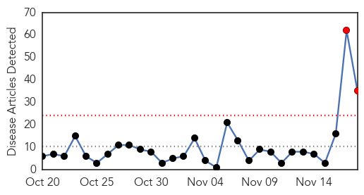
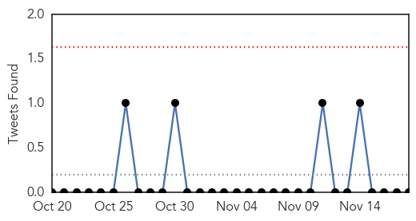
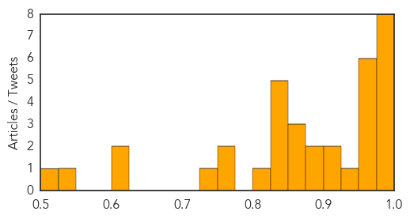
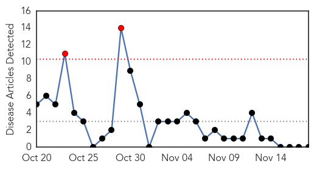

Influenza
30-Day Web Trend
2 alerts, 0 warnings

30-Day Twitter Trend
0 alerts, 0 warnings

Article Locations

Article Confidences
Top Articles:
- 0.998
- H7N7 virus: bird flu confirmed at poultry farm in Lancashire
- 0.998
- Europe's bird-flu outbreaks pose little risk to humans : Nature News & Comment
- 0.998
- Flu Scan for Nov 18, 2014
- 0.993
- Bird flu spread likely, human cases unlikely but possible
- 0.983
- Bird flu outbreak in the Netherlands
- 0.982
- WHO braces for bird flu spread in European poultry
- 0.980
- Mass Flu clinic scheduled
- 0.979
- Health officials urge Metro Detroiters to get flu shots before holidays
- 0.975
- Urgent measures to prevent spread of bird flu from Nafferton Farm
- 0.974
- Health expert warns there 'will probably be human cases' of bird flu
- 0.964
- Free home flu test kits for Flusurvey participants
- 0.964
- Technology against a flu outbreak
- 0.961
- Scientists call for public to help monitor spread of flu across the UK
- 0.954
- New vaccine to fight four strains of the flu
- 0.934
- WHO warns of bird flu spreading in Europe
- 0.924
- Looking back: Ebola, nothing new about epidemics and outbreaks
- 0.923
- Why avian flu is nothing to worry about. Yet
- 0.890
- 'Contagious' bird flu outbreaks on Dutch, British farms – are you at risk?
- 0.889
- Avian Influenza in The Netherlands and the UK — EU - European Union business news and information
- 0.875
- 'Contagious' bird flu outbreaks on Dutch, British farms
- 0.859
- Scots farmers told to be on guard against bird flu
- 0.851
- Bird flu at UK duck farm same strain as Germany and Netherlands cases
- 0.836
- Bird flu discovered in U.K., Netherlands, but authorities play down risk to humans
- 0.831
- Slaughter starts in bird flu outbreak
- 0.829
- Ducks culled as vets call for ‘biosecurity lockdown’
- 0.828
- Bird flu found in UK, Netherlands but authorities say little risk to humans
- 0.827
- Bird flu found in UK, Netherlands but authorities say little risk to humans
- 0.809
- UK bird flu outbreak confirmed as H5N8 strain
- 0.769
- Britain confirms bird flu on English farm is H5N8 strain
- 0.754
- S. Korea issues import ban on poultry from Britain, Netherlands
- 0.742
- Europe on alert as avian flu spreads
- 0.621
- Thousands of birds culled at duck farm run by northern Lincolnshire firm
- 0.604
- Norway on alert after bird-flu outbreak in Europe
- 0.540
- Could the Cold Snap Give you a Cold?
- 0.512
- saudi Press agency
Top Tweets:
-
No tweets found for Nov 18, 2014
Meningitis
30-Day Web Trend
2 alerts, 0 warnings

30-Day Twitter Trend
0 alerts, 0 warnings

Article Locations

Article Confidences

Top Articles:
-
No articles found for Nov 18, 2014
Top Tweets:
-
No tweets found for Nov 18, 2014